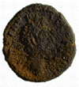

Active conservation
Active conservation
You can click on this Roman coin to show the effect of cleaning.
COIN CONSERVATION
To 'conserve' means to safeguard and preserve for now and for the future. Conservation is a fundamental part of coin collecting.
To conserve any coin satisfactorily we must first understand the nature of the object and its decay, and the effect of any treatments. In the past, coins and other objects were often treated without understanding the unchangeable effects these actions would have. Today, we understand a great deal about the chemistry of decay and how to combat it.
CONSERVING SILVER COINS
Silver coins can be the most difficult coins to treat, as a good robust looking surface can hide a very brittle core. Silver readily tarnishes in the presence of pollution and the corrosion formed after burial can completely cover details of the coin.
Surface dirt can be removed with a tooth pick and warm water. Removal of tarnish and corrosion is best left to a professional conservator who can assess the coin's physical condition and advise on further treatment.
ACTIVE CONSERVATION
The aim of active conservation is to produce a stable coin which is as easy to read as possible. This is done by the manual and chemical removal of corrosion from the coin's surface.
Removal of corrosion requires a great deal of experience and skill. Knowledge of the various types of corrosion is essential, since much information can be lost by using the wrong treatment. Most of the chemicals employed are dangerous and should only be used in laboratories.
By contrast, passive conservation means the storage of coins in an environment which will have the minimum effect on them.

Find out more about the conservation of silver coins below.